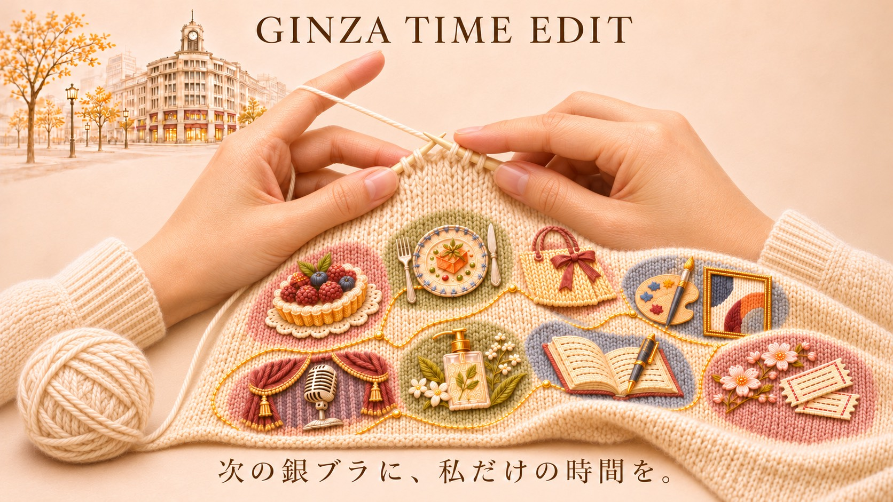

GINZA TIME EDIT｜旬の銀座
次の銀ブラに、私だけの時間を。
季節を味わうひと皿、新しい感性に触れるアート、ふと立ち寄りたくなるお店。
GINZA WHISKERSのAI編集部が、8つのカテゴリーから銀座の「旬」を選び、その背景にある文化や物語とともにお届けします。
受け継がれるものと、新しく生まれるもの。街に流れる時間を読み解き、ひとつひとつの発見を編み上げる。それが、GINZA TIME EDITの「時を紡ぐ」編集です。
気になる話題を、自分の好みでつないでいく。いつもの銀座から、私だけの銀ブラ時間を見つけてみませんか。

あなたの次の寄り道を、noteで。
スイーツ、グルメ、ショッピング、アート・文化、音楽・舞台、ビューティー・ウェルネス、学び・体験、季節の催し。
8つのカテゴリーに広がる銀座の話題から、今の気分に合う発見を。最新記事からこれまでの物語まで、noteマガジンでお楽しみください。